This slide deck is still under active development. Expect changes before it is finalized.
Learning objectives
Build next-token pairs, and say why a fixed-window language model is limited
Describe an RNN: a hidden state updated from the previous state and the current input, with the same weights at every step
Trace one step of a recurrent cell with real numbers
Explain backpropagation through time conceptually, and why gradients over long sequences vanish or explode
Say what a gate does in an LSTM or GRU, and why one fixed-size state limits long-range dependencies
Language modeling
Predicting what comes next
Predicting the next word
Words are now vectors. What do we ask a model to do with them?
The task from last time: given the words so far, predict the next one. “the cat sat on the ___”
It is a classification problem. The input is the words so far, the classes are all the words in the vocabulary, and the correct class is the word that actually came next
The labels cost nothing: any text already contains the right answer at every position
A model that does this is a language model
A window of context
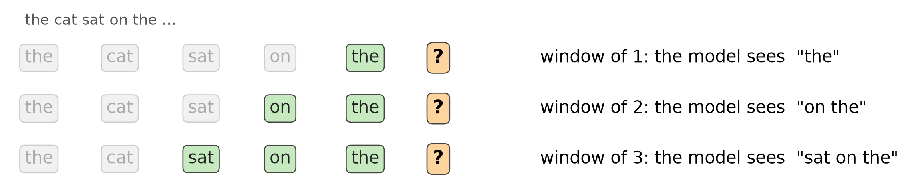
The window is the last k words, the only part of the sentence we hand the model. With k = 2 we pass in “on the” and ask for the next word. The text says “mat”
The window slides: after “mat” it becomes “the mat”, and we predict again
Next-token pairs
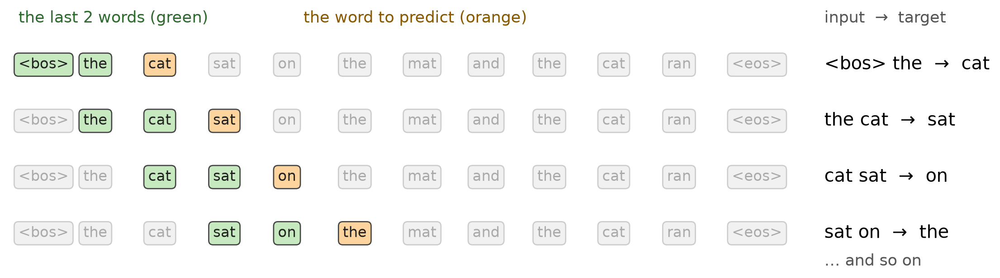
Slide a window of the last 2 words along the sentence. Each position gives one training example: the window is the input, and the word after it is the target
10 examples from 12 tokens, and every one comes straight from the text. Skip-gram used neighbours on both sides. Here only the past counts
The window model
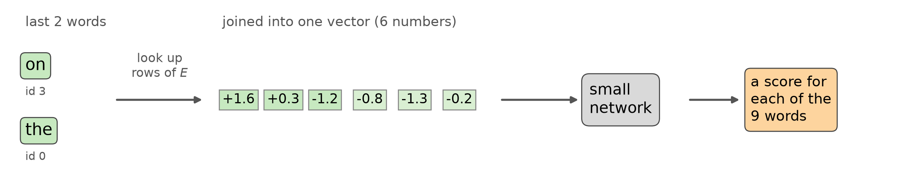
Look up the embeddings of the last k words, join them, and feed them to a small network that scores every word. Other models combine them differently
The same network is used at every position. It works when a little context is enough
A prediction model: trained to guess the next word. The embeddings are trained along the way, as a by-product
The model’s output
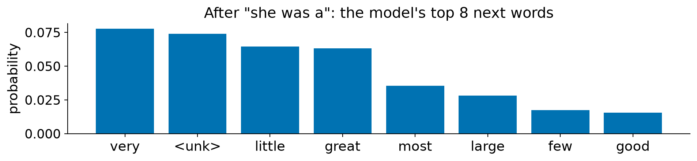
Trained on the whole novel. One score per word (2,124 of them), turned into probabilities by softmax
Embeddings go in, but the output is not an embedding: it is a score per word id, trained with cross-entropy against the true next word (a one-hot). Classification with 2,124 classes
Same softmax and cross-entropy as classification, with all the words as the classes. The scores here are made up
Measuring a language model
The softmax slide gave the loss for one prediction, -\log p_{\text{true}}. A model’s loss is the average of that over every position in a text.
Training loss: the average on text the model was trained on
Held-out loss: the average on text it never saw. This is the one we care about, because it says how well the model predicts new text. Lower is better
A guess that gives every word equal probability scores \log 2,124 = 7.66 on a vocabulary of 2,124 words, so a useful model must beat that
The limit of a fixed window
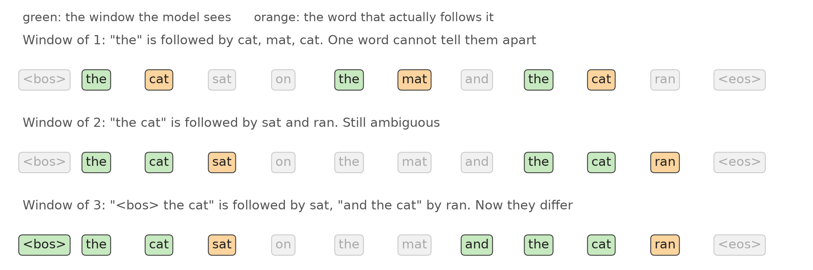
Real text always has something that matters from further back than any window we pick: the subject of a long sentence, a name from a paragraph ago
A longer window sees more, but everything older than the window is still invisible, and long windows rarely repeat (see the next slide)
Does a longer window help?
Window k
Held-out loss
Windows seen in training
no context
5.84
1
5.00
100%
2
4.92
75%
5
4.96
1%
8
5.01
0%
One word helps a lot, two a little more, and past that more words do not help
The last column: the share of held-out windows that also occur in the training text. Long windows almost never repeat: at k = 5 the model has no example of 99% of them
Same text, two embedding tables
Word
word2vec: nearest words
Window model: nearest words
mother
father, sister, commendation
arose, stand, reason
london
town, meryton, scotland
eliza, rejoice, choose
mr
collins, miss, wickham
mrs, drawn, favourite
Both have an embedding table, one vector per word, trained on the same text. The table shows each word’s nearest neighbours by vector
What differs is what the training rewards. word2vec’s loss rewards nearby words having similar vectors. The window model’s loss rewards guessing the next word
word2vec is an embedding model: the vectors are the goal. The window model is a prediction model: the vectors are a by-product, and far less tidy here
Takeaway
A language model is a next-word classifier over the whole vocabulary.
A fixed window sees only a fixed amount of the past.
Recurrent networks
A memory that moves with the sequence
A window is not memory
We want a model that uses everything it has seen so far, without its input growing with the length of the history.
A window of k words sees exactly k words. Everything older is gone
Making the window longer does not fix it: long windows rarely repeat in the text, so the model has little to learn from
What we want:
A short, fixed-size note about the past that gets updated as each new word arrives, so the model reads only the note and the new word
The Big Idea
Carry a small summary of everything seen so far, and update it with each new word.
The summary is a vector, the hidden state. It is a representation of the past, built one step at a time
The same update is used at every step, so it works for a sentence of any length
It is a layer of ordinary neurons: a weighted sum of the inputs, then \tanh. The one twist is the loop: the output is also fed back in as an input at the next step
Breakdown: the new state
Piece
What it is
Role
\mathbf{x}_t
This word’s embedding
What is new
\mathbf{h}_{t-1}
The summary so far
What we keep from the past
W_{xh}\,\mathbf{x}_t
A linear layer on the word
What this word contributes
W_{hh}\,\mathbf{h}_{t-1}
A linear layer on the old state
How much of the past carries over, and how it is mixed
\mathbf{b}
A bias vector
A constant shift
\tanh
Squashes each number into (-1, 1)
Keeps the state from growing without bound
Same shape as before: a linear layer, then a nonlinearity. The input is the word and the old state side by side
W_{xh}, W_{hh} and \mathbf{b} are the parameters, and they are the same at every step
A layer of neurons, fed back
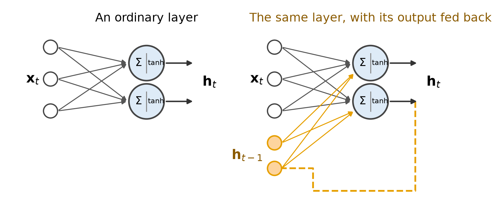
The cell is not one neuron. It is a layer of neurons, like the hidden layer of an MLP, and the state \mathbf{h}_t has one number per neuron (2 on these slides, 64 in the lab)
The only difference from an MLP layer: the output is pushed back in as an input at the next step. More neurons, more layers and an output layer all work as usual
Two steps on the diagram
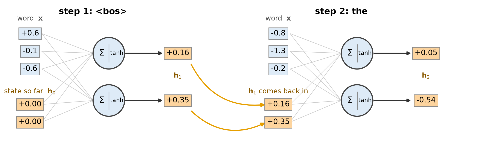
Each step is the same layer of two neurons. It takes the word’s vector and the previous state, and produces the new state
The new state from step 1 is fed back in at step 2 (orange). The next two slides do the arithmetic
One step with real numbers
First word is <bos>, with the state starting at zero. Hidden size 2, embedding size 3.
The new state mixes “the” with what came before it. The same W_{xh} and W_{hh} were used in both steps
The cell, unrolled
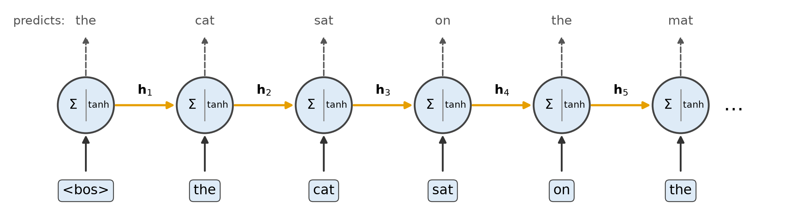
Open out the loop: the same neurons, copied once per word, with the output of each copy (orange) passed to the next. It is one set of weights used at every step, like the twin network and like a convolution applied at every position
The dashed arrows are the next-word scores, the output we want at each position
The hidden state over the sentence
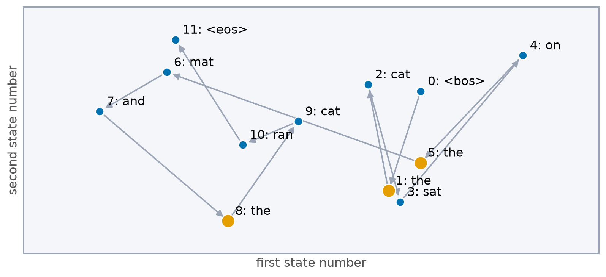
The 2-number state at each step of our sentence, using the same small weights as the last slides, so the picture shows what a cell does and not a trained result
“the” (orange) appears three times and lands in three different places, because the state also holds what came before it. A window of one word could not do that
An RNN language model in PyTorch
class RNNLM(nn.Module):def__init__(self, vocab_size, dim, hidden):super().__init__()self.embedding = nn.Embedding(vocab_size, dim)self.rnn = nn.RNN(dim, hidden, batch_first=True)self.out = nn.Linear(hidden, vocab_size)def forward(self, ids): # ids: (batch, length) x =self.embedding(ids) # (batch, length, dim) states, _ =self.rnn(x) # (batch, length, hidden)returnself.out(states) # (batch, length, vocab)model = RNNLM(vocab_size=9, dim=3, hidden=4)ids = torch.tensor([[ID[w] for w in SEQ]])print(ids.shape, "->", model(ids).shape)
torch.Size([1, 12]) -> torch.Size([1, 12, 9])
nn.RNN loops over the length for us and returns the state after every step
A linear layer turns each state into scores over the vocabulary
Two ways to use the states
1. Predict at every step
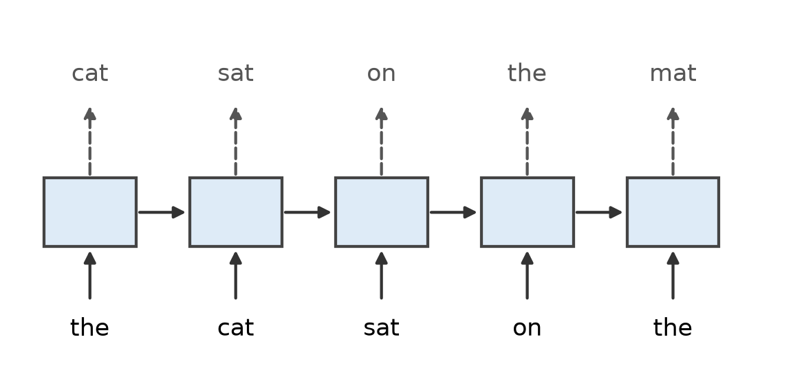
A language model: every state predicts the word after it
The state at each step is used on its own
2. Read it all, then decide
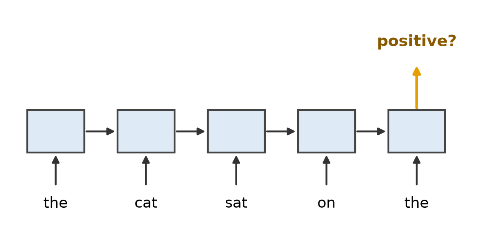
A classifier, such as a movie review: use only the last state
That state is an embedding of the whole sequence. This is what the lab does
Takeaway
The hidden state is a fixed-size summary of the past, updated by the same cell at every step.
Training through time
Learning across steps
Unrolling makes a deep network
Copy the cell once per word, and the RNN is a network as deep as the sequence is long, with the same weights in every layer.
A sentence of 12 words is a 12-layer network. A review of 130 words is a 130-layer network
So the problems of deep networks come back, in particular gradients that shrink or grow as they travel through many layers
We met this with very deep networks and fixed it with residual connections. Here the weights are shared, which makes it harder
Backpropagation through time
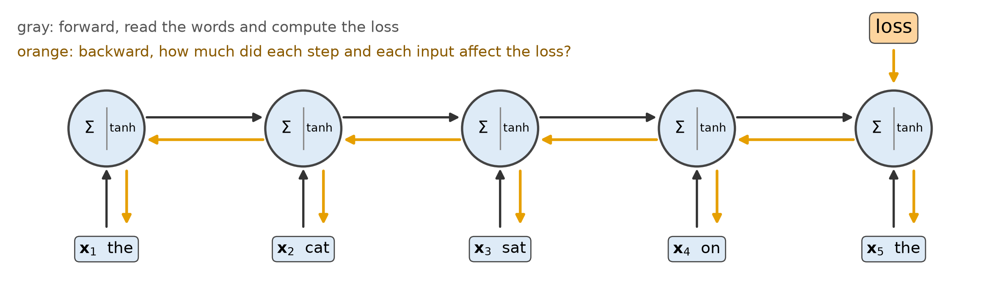
The loss is at the end. To learn from it we ask how much each earlier input \mathbf{x}_t affected it, so the gradient goes back through every step
The weights are shared, so their gradient is the sum of each step’s contribution
A long chain of the same weight
Take the simplest possible RNN: one number as the state, and no \tanh. Each step multiplies by one weight w.
How much does the state n steps back affect the last state? It is the weight, multiplied n times:
Weight w
After 10 steps
After 50 steps
After 100 steps
0.9
0.9^{10} = 0.349
0.9^{50} = 5.15 \times 10^{-3}
0.9^{100} = 2.66 \times 10^{-5}
1.0
1.0^{10} = 1
1.0^{50} = 1
1.0^{100} = 1
1.1
1.1^{10} = 2.59
1.1^{50} = 117
1.1^{100} = 1.38 \times 10^{4}
w < 1: the influence of far-back words vanishes. The loss cannot tell the model that an early word mattered
w > 1: it explodes. A few huge gradients can wreck training
A real RNN has a matrix W_{hh} and a \tanh, but the same thing happens: the same factor, many times
How far back can the gradient reach?
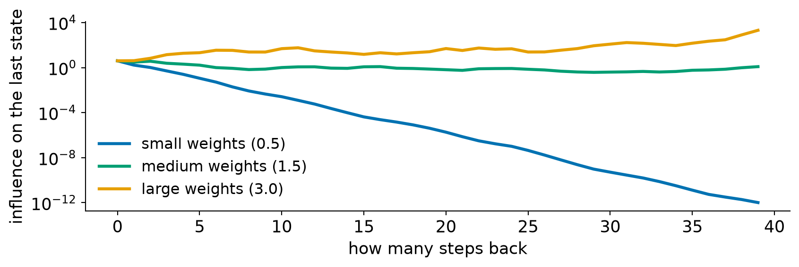
A small RNN over 40 steps. Each curve is how strongly the state n steps back influences the last state: the learning signal that step can receive (log axis)
Small weights vanish: after 20 steps it is about a millionth, so far-back words cannot be learned from
Large weights explode: it grows by orders of magnitude
Clipping: a training trick for exploding gradients
This changes how we train, not the model. Before each update, if the gradient is longer than a limit (here 1), scale it down to that length. The direction stays the same
One huge gradient can no longer throw the weights far away, so training is steadier. You use it in the lab
It fixes exploding gradients only. A vanished gradient is just small, and there is nothing to scale back up
Vanishing needs a change to the model itself, which is where the next section goes
Takeaway
Training an RNN is training a very deep network with shared weights, and long chains make the gradient vanish or explode.
Limits of RNNs
What one state, read one step at a time, costs us
Where RNNs struggle
An RNN predicts at every step, embeds a whole sequence, and uses the same weights for any length. It also has three limits:
Long-range dependencies: a detail from far back has to survive many updates, and the gradient that would teach the model to keep it is the one that vanishes
One state for everything: all of the past has to fit in one fixed-size vector that is overwritten at every step
Slow: step t needs step t-1, so the steps cannot run in parallel
Each one in turn, then what was done about them
Long-range dependencies
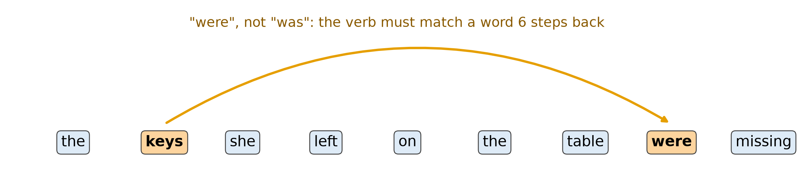
The verb has to match a word that came several steps earlier, so that word has to survive every update in between
The gradient that would teach the model to keep it has to travel back the same distance, and that is the gradient that vanishes
One state for everything
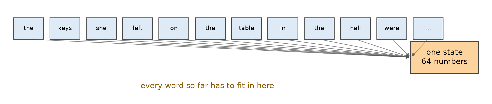
A 5-word review and a 500-word review both end as the same 64 numbers (the size in the lab)
Each new word is written into the same state, so something old has to be overwritten
The longer the text, the more has to be squeezed out, and the model decides what to drop
Slow: one step at a time
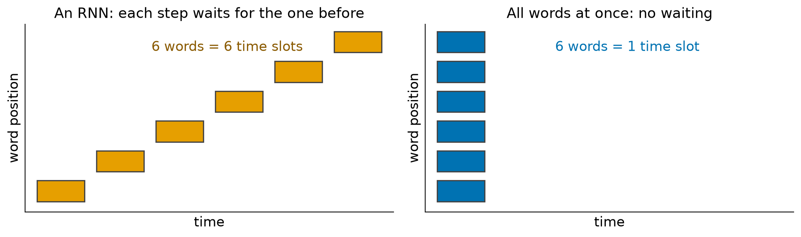
Step t needs the state from step t-1, so a 500-word review takes 500 steps in a row
GPUs are fast because they do many things at once. An RNN cannot use that along a sequence, though it can across many reviews in a batch
Long texts are slow to train on, and that limit gets worse as the data grows
What comes next
Gates, then what RNNs are used for
Gates: how much to keep
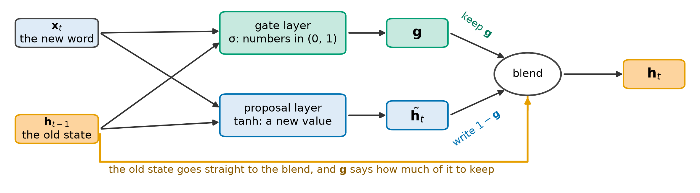
A gate is another layer, reading the same two inputs as the proposal: the new word and the old state. Its output \mathbf{g} is a number between 0 and 1 per unit
Per unit, it says how much of the old value to keep. The rest is replaced by the proposal
#- First number: gate 1.0, so the old value (0.8) is kept. Second number: gate 0.1, so the old value is mostly replaced
LSTM and GRU
GRU
LSTM
Gates
2 (update, reset)
3 (forget, input, output)
State
One vector
Hidden state plus a separate memory
Cost
Fewer weights
More weights
self.rnn = nn.GRU(dim, hidden, batch_first=True)
Gated recurrent cells: the standard for sequences before attention, still used for small or streaming problems
In PyTorch, nn.GRU or nn.LSTM replaces nn.RNN. (nn.LSTM also returns its memory)
The idea to keep is the gate: a learned 0-to-1 dial on what to keep and what to write
Beyond the RNN
Gates fix the first limit: a detail can survive many steps. But there is still one state, and one step at a time
Next lecture: what RNNs are used for in practice, including sequence to sequence: one RNN reads a text and another writes a new one. It also shows the one-state limit at its clearest
After that comes attention: let the model look back at any earlier word directly, and weigh how much each one matters. It is the idea behind transformers and helps the second and third limits
Summary
Recap: three ways to use the past
Fixed window
RNN
Attention (later)
What it sees
The last k words
A summary of everything so far
Any earlier word, directly
Input size
Grows with k
Fixed
Grows with the length
Main weakness
Blind past k
One state to carry it all, vanishing gradients
Costs more as the text grows
Recap: key ideas
A language model predicts the next word: a classifier over the whole vocabulary, with free labels from the text
A fixed window is blind beyond k words, and a longer window does not fix it
An RNN carries a hidden state updated by the same cell at every step. The state is a fixed-size summary of the past
Unrolled, an RNN is a deep network with shared weights. Backpropagation through time sums the gradient over steps, and long chains make it vanish or explode
Clipping tames exploding gradients. Gates (LSTM, GRU) help details survive
Where this goes next
Next lecture: applications of RNNs, including sequence to sequence (one RNN reads a text, another writes one)
Then attention and transformers: look back at any word, instead of squeezing the past into one state